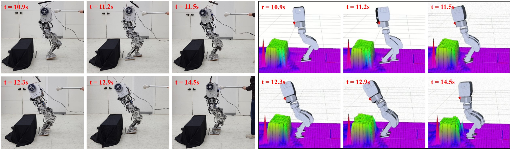

(1) Korea Advanced Institute of Science and Technology

Abstract
This paper introduces an obstacle-avoiding algorithm for bipedal robots,
especially in push recovery situations. Typically, There are many algorithms
that plan footstep to avoid obstacles based on vision recognition data.
However, if the robot is pushed, the planned footprint will change, and thus,
there is no guarantee that it will avoid obstacles. Although modified stepping
positions can be limited, the robot's stability is not assured. Our proposed
algorithm focuses on avoiding obstacles through vision recognition in push recovery
situations and generating compensation actions for instability by restricting modified
footsteps. We fuse vision feedback with our previous push recovery algorithm, which
optimizes the ankle, hip, and stepping strategies. We build simple grid data using
vision recognition and apply it to the inequality constraint of the stepping position.
We validate the effectiveness of our algorithm using the bipedal platform GAZELLE
with the Kinect V2 RGBD sensor.
@INPROCEEDINGS{
PushRecoveryVisionJeong2019,
author={Jeong, Hyobin and Kim, Joon-Ha and Sim, Okkee and Oh, Jun-Ho},
booktitle={2019 IEEE/RSJ International Conference on Intelligent Robots and Systems (IROS)},
title={Avoiding Obstacles during Push Recovery Using Real-Time Vision Feedback},
year={2019},
volume={},
number={},
pages={483-490},
doi={10.1109/IROS40897.2019.8968009}
}